k8s_riwai_3_samples: 5date: 2022-06-13 11:36:04.291406 | max: 482 min: 299 mean: 354 |
max: 5626 min: 4624 mean: 5302 |
max: 99.88 min: 90.34 mean: 98.31 |
max: 382 min: 40 mean: 198 | ||
| 1: 2022.03.17_03-57_k8s_riwai_3_af09 | cpu=70 pods=6 treads=25 sc_min=14 warmup=90 | Dura-tion s | qps | CPU % | Err | |
| 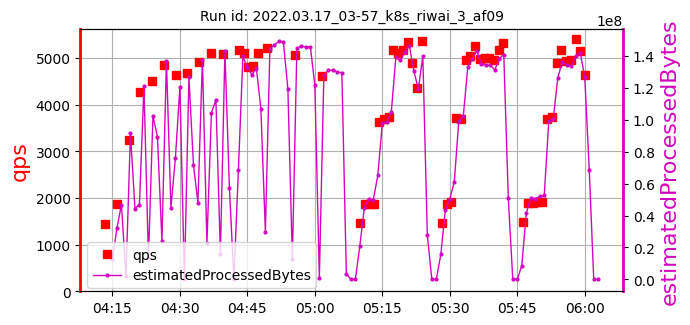 | 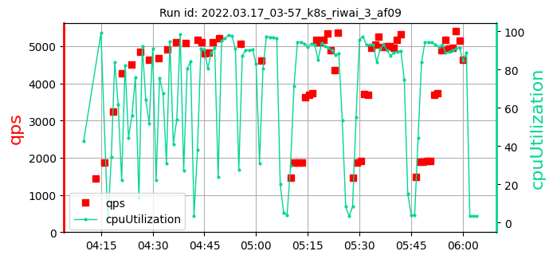 | 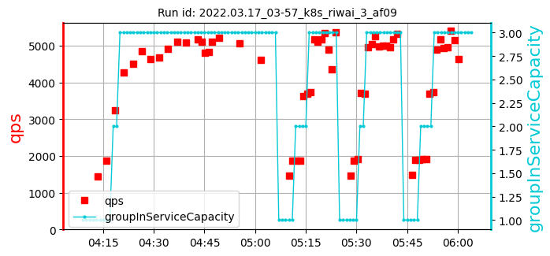 | [394, 347, 482] 407 | [5217, 5062, 4624] 4968 | [97.42, 90.34, 97.13] 94.97 | 382 |
| 2: 2022.05.29_09-49_k8s_riwai_3_d071 | cpu=70 pods=6 treads=25 sc_min=14 warmup=90 | Dura-tion s | qps | CPU % | Err | |
| 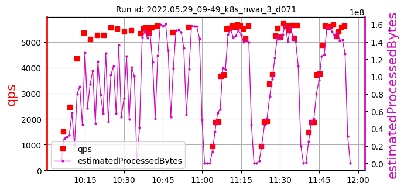 | 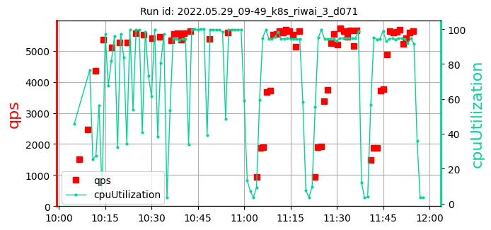 | 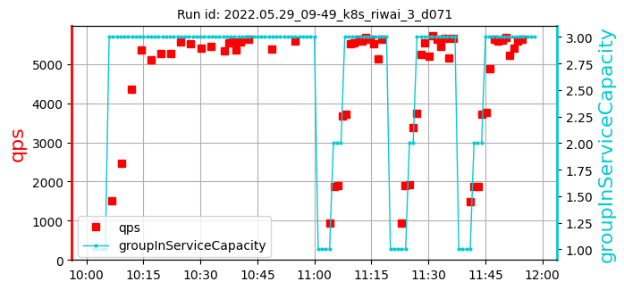 | [299, 352, 314] 322 | [5626, 5391, 5590] 5536 | [99.88, 99.66, 99.81] 99.78 | 250 |
| 3: 2022.05.29_21-20_k8s_riwai_3_d071 | cpu=70 pods=6 treads=25 sc_min=14 warmup=90 | Dura-tion s | qps | CPU % | Err | |
| 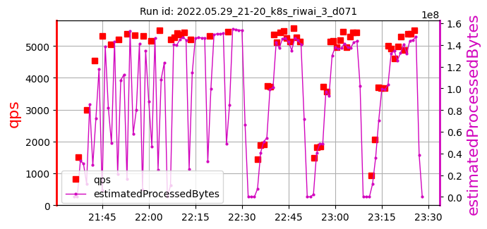 | 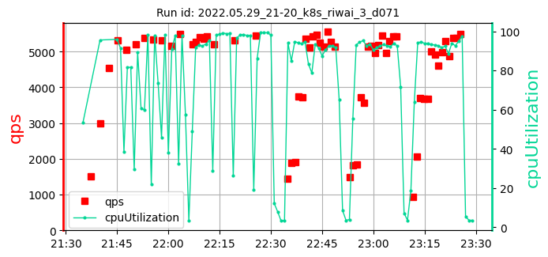 | 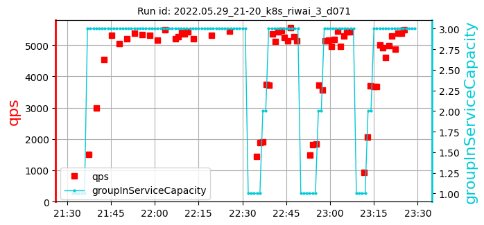 | [307, 331, 328] 322 | [5197, 5307, 5437] 5314 | [98.8, 98.1, 99.25] 98.72 | 180 |
| 4: 2022.05.31_22-58_k8s_riwai_3_d071 | cpu=70 pods=6 treads=25 sc_min=14 warmup=90 | Dura-tion s | qps | CPU % | Err | |
| 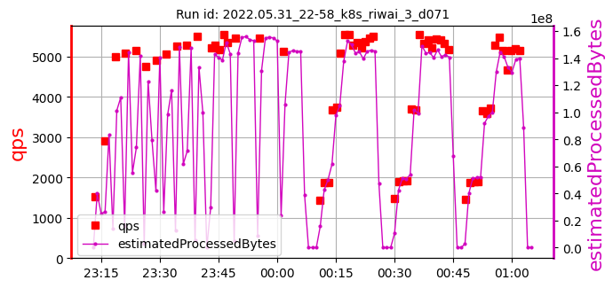 | 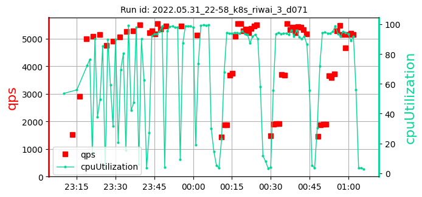 | 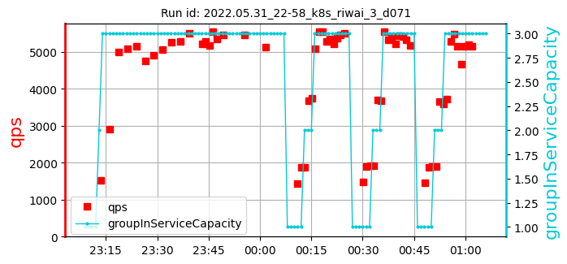 | [358, 385, 408] 384 | [5451, 5468, 5127] 5349 | [98.32, 98.71, 99.37] 98.80 | 139 |
| 5: 2022.06.01_04-52_k8s_riwai_3_d071 | cpu=70 pods=6 treads=25 sc_min=14 warmup=90 | Dura-tion s | qps | CPU % | Err | |
| 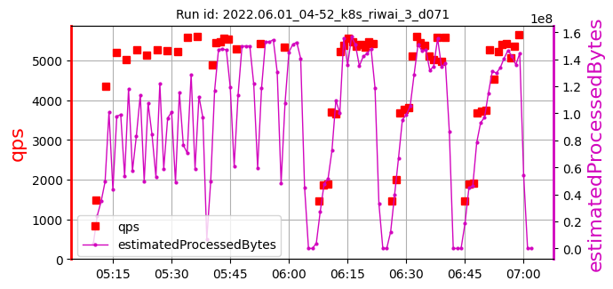 | 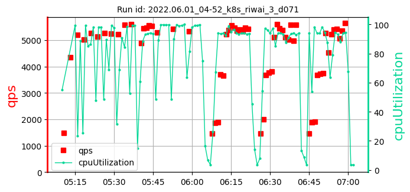 | 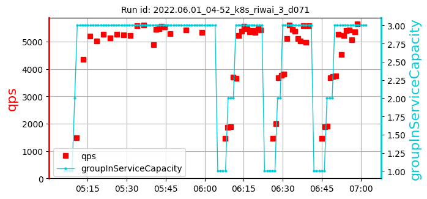 | [318, 320, 371] 336 | [5279, 5430, 5329] 5346 | [99.66, 99.31, 98.88] 99.28 | 40 |
k8s_riwai_3_samples: 5date: 2022-06-13 11:36:04.291406 | max: 482 min: 299 mean: 354 |
max: 5626 min: 4624 mean: 5302 |
max: 99.88 min: 90.34 mean: 98.31 |
max: 382 min: 40 mean: 198 |